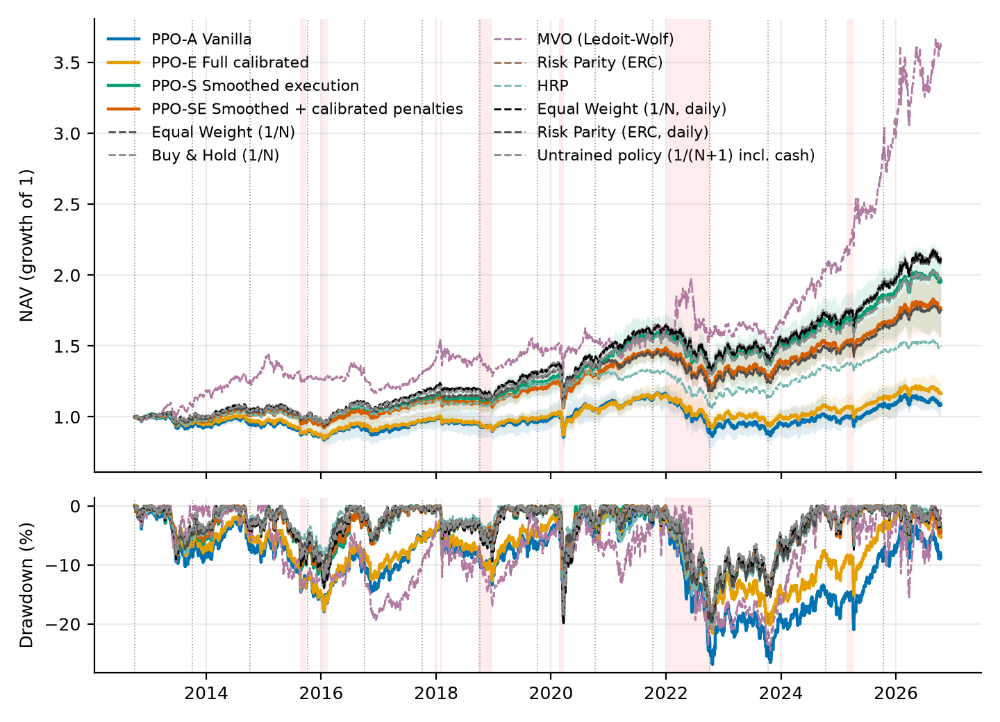
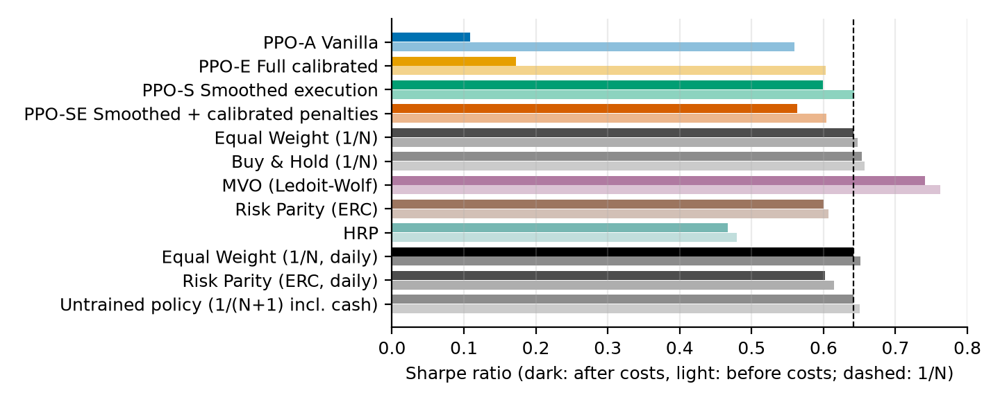
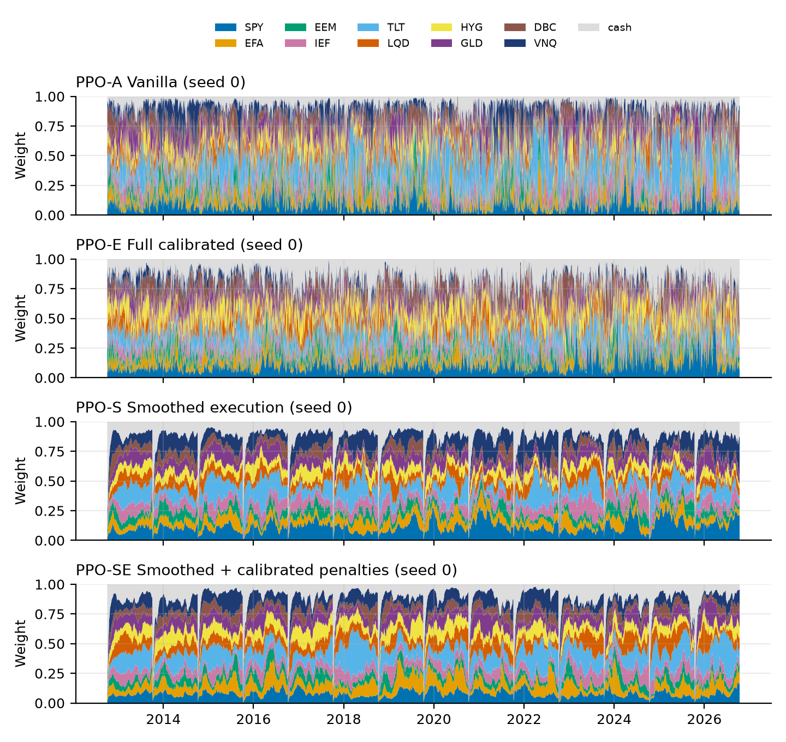
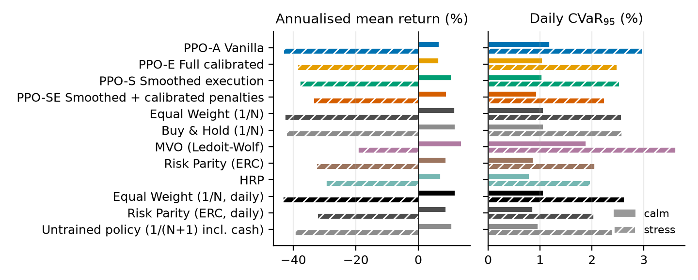
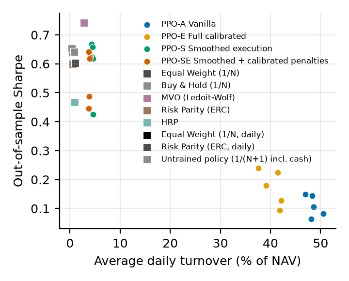
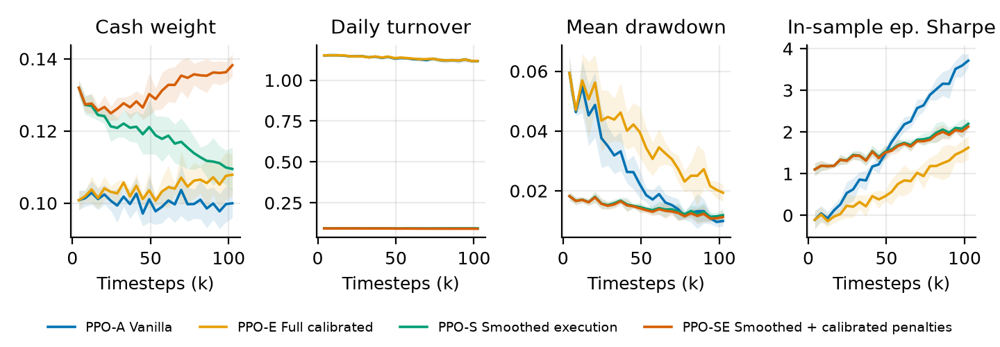

<title>Tail-Risk PPO Evaluation</title>
<meta name="description" content="Empirical evaluation of CVaR- and drawdown-penalised PPO portfolio allocators under tradable next-open execution, square-root market impact, walk-forward retraining and pre-specified inference.">
<link rel="preconnect" href="https://fonts.googleapis.com">
<link rel="preconnect" href="https://fonts.gstatic.com" crossorigin>
<link rel="stylesheet" href="https://fonts.googleapis.com/css2?family=Source+Serif+4:ital,opsz,wght@0,8..60,400;0,8..60,600;0,8..60,700;1,8..60,400&family=IBM+Plex+Sans:wght@400;500;600&family=IBM+Plex+Mono:wght@400;500&display=swap">
<script>
window.MathJax = {
  tex: { inlineMath: [["\\(", "\\)"]], displayMath: [["\\[", "\\]"]], tags: "ams" },
  svg: { fontCache: "global" },
  options: { skipHtmlTags: ["script", "noscript", "style", "textarea", "pre", "code"] }
};
</script>
<script src="https://cdnjs.cloudflare.com/ajax/libs/mathjax/3.2.2/es5/tex-svg.js" async></script>
<style>
/* Layout: a single reading column (~68ch) for prose; figures and tables may widen to 960px. */
:root {
  --paper: #FAFBFC;
  --ink: #18212B;
  --muted: #5B6673;
  --rule: #D6DCE3;
  --accent: #1D5B86;
  --accent-soft: #EAF1F7;
  --panel: #FFFFFF;
  --good: #1E7A4C;
  --bad: #A23B2A;
  --serif: "Source Serif 4", "Source Serif Pro", Georgia, "Times New Roman", serif;
  --sans: "IBM Plex Sans", "Helvetica Neue", Arial, sans-serif;
  --mono: "IBM Plex Mono", Menlo, Consolas, monospace;
  --measure: 68ch;
  --wide: 960px;
}
@media (prefers-color-scheme: dark) {
  :root:not([data-theme="light"]) {
    --paper: #12171D; --ink: #E2E7ED; --muted: #9AA5B1; --rule: #2B343E; --accent: #86BCE3;
    --accent-soft: #1A2733; --panel: #F7F8FA; --good: #6CC79A; --bad: #E58C7C; color-scheme: dark;
  }
}
:root[data-theme="dark"] {
  --paper: #12171D; --ink: #E2E7ED; --muted: #9AA5B1; --rule: #2B343E; --accent: #86BCE3;
  --accent-soft: #1A2733; --panel: #F7F8FA; --good: #6CC79A; --bad: #E58C7C; color-scheme: dark;
}
body { background: var(--paper); color: var(--ink); font-family: var(--serif); font-size: 17px; line-height: 1.6; }
.page { max-width: var(--wide); margin: 0 auto; padding-inline: 20px; padding-block: 40px 80px; }
.page > * { max-width: var(--measure); margin-inline: auto; }
.page > figure, .page > .wide { max-width: var(--wide); }
h1, h2, h3, h4 { font-family: var(--sans); text-wrap: balance; line-height: 1.25; color: var(--ink); }
h1 { font-size: clamp(1.6rem, 3.4vw, 2.2rem); font-weight: 600; margin-block: 0 0.6em; letter-spacing: -0.01em; }
h2 { font-size: 1.32rem; font-weight: 600; margin-block: 2.4em 0.6em; padding-top: 0.6em; border-top: 1px solid var(--rule); }
h3 { font-size: 1.06rem; font-weight: 600; margin-block: 1.8em 0.4em; }
h2 .sec, h3 .sec { color: var(--accent); margin-right: 0.45em; font-variant-numeric: tabular-nums; }
p { margin-block: 0 1em; }
a { color: var(--accent); text-underline-offset: 2px; }
a:focus-visible { outline: 2px solid var(--accent); outline-offset: 2px; }
.kicker { font-family: var(--sans); font-size: 0.78rem; letter-spacing: 0.09em; text-transform: uppercase; color: var(--accent); margin-bottom: 0.8em; }
.author { font-family: var(--sans); font-size: 1.05rem; font-weight: 500; color: var(--ink); margin-bottom: 0.35em; }
.byline { font-family: var(--sans); font-size: 0.9rem; color: var(--muted); margin-bottom: 2em; }
.abstract { border-left: 3px solid var(--accent); background: var(--accent-soft); padding: 1em 1.2em; margin-block: 1.4em 1.2em; }
.abstract h2 { border: 0; margin: 0 0 0.4em; padding: 0; font-size: 0.82rem; letter-spacing: 0.09em; text-transform: uppercase; color: var(--accent); }
.abstract p:last-child { margin-bottom: 0; }
.keywords { font-family: var(--sans); font-size: 0.86rem; color: var(--muted); }
.keywords b { color: var(--ink); font-weight: 500; }
nav.toc { font-family: var(--sans); font-size: 0.9rem; border: 1px solid var(--rule); padding: 0.9em 1.2em; margin-block: 1.6em; }
nav.toc h2 { border: 0; margin: 0 0 0.4em; padding: 0; font-size: 0.8rem; text-transform: uppercase; letter-spacing: 0.09em; color: var(--muted); }
nav.toc ol { margin: 0; padding-left: 1.3em; columns: 2 14rem; column-gap: 2rem; }
nav.toc li { break-inside: avoid; margin-block: 0.15em; }
.contrib { padding-left: 1.2em; }
.contrib li { margin-block: 0.35em; }
.callout { font-family: var(--sans); font-size: 0.93rem; border: 1px solid var(--rule); border-left: 3px solid var(--accent); padding: 0.8em 1em; margin-block: 1.2em; }
.callout b { color: var(--accent); }
.eq { overflow-x: auto; overflow-y: hidden; margin-block: 0.4em 1em; }
figure { margin-block: 1.8em; margin-inline: auto; }
figure.fig img { display: block; width: 100%; height: auto; background: var(--panel); border: 1px solid var(--rule); border-radius: 2px; }
figcaption { font-family: var(--sans); font-size: 0.86rem; color: var(--muted); line-height: 1.5; margin-top: 0.6em; }
figure.table figcaption { margin: 0 0 0.6em; }
figcaption b { color: var(--ink); font-weight: 600; }
.scroll { overflow-x: auto; }
table { border-collapse: collapse; width: 100%; font-family: var(--sans); font-size: 0.82rem; font-variant-numeric: tabular-nums; }
thead th { text-align: left; font-weight: 600; border-bottom: 1.5px solid var(--ink); padding: 0.45em 0.6em; vertical-align: bottom; line-height: 1.3; }
tbody td { padding: 0.38em 0.6em; border-bottom: 1px solid var(--rule); vertical-align: top; }
tbody tr:last-child td { border-bottom: 1.5px solid var(--ink); }
tr.group-start td { border-top: 1.5px solid var(--muted); }
th.num, td.num { text-align: right; white-space: nowrap; }
td .lam { color: var(--muted); font-size: 0.9em; white-space: nowrap; }
td .pm { color: var(--muted); font-size: 0.88em; }
.table-note { font-family: var(--sans); font-size: 0.8rem; color: var(--muted); margin-top: 0.5em; }
code, .mono { font-family: var(--mono); font-size: 0.86em; }
pre { font-family: var(--mono); font-size: 0.82rem; background: var(--accent-soft); padding: 0.9em 1em; overflow-x: auto; line-height: 1.5; }
ol.refs { font-size: 0.9rem; padding-left: 2.2em; }
ol.refs li { margin-block: 0.35em; }
.finding { display: grid; grid-template-columns: 2.2em 1fr; gap: 0.2em 0.6em; margin-block: 0.8em; }
.finding .n { font-family: var(--sans); font-weight: 600; color: var(--accent); }
.finding p { margin: 0; min-width: 0; }
mjx-container[display="true"] { margin: 0.6em 0 !important; }
@media (max-width: 560px) { body { font-size: 16px; } .page { padding-inline: 16px; } }
@media (prefers-reduced-motion: reduce) { * { scroll-behavior: auto !important; } }
</style>

<main class="page">
<div class="kicker">Empirical evaluation · Quantitative finance · Reinforcement learning</div>
<h1>Do Tail-Risk Penalties Help Deep RL Portfolio Allocators? A Walk-Forward Evaluation with Tradable Execution, Market Impact and Pre-Specified Inference</h1>
<div class="author">Deborshi Vikramaditya Chakravorty</div>
<div class="byline">Version 6 · November 2026 · Supersedes versions 1–5, whose fill convention was not tradable (§5) · Every reported number is produced by the accompanying repository (§12)</div>

<section class="abstract">
<h2>Abstract</h2>
<p>Deep reinforcement learning (DRL) portfolio allocators are often given tail-risk penalties in their reward to make them safer. We evaluate that practice for proximal policy optimisation (PPO) on ten liquid multi-asset ETFs over 14 annual walk-forward folds (October 2012 to October 2026, 3,527 test days). The simulator charges commission, half-spread and square-root market impact; every design is trained with five seeds; and every strategy, including classical rules, an untrained-policy control and an exposure-matched control, runs through the same simulator. Orders are decided after the close and filled at the next open. An audit found that earlier versions of this study filled orders at the same close that the features had already used, which cannot be traded. We corrected the simulator, reran the decisive experiments, and tested five comparisons fixed in an analysis plan committed before the rerun, using a two-level (seed and time-block) bootstrap with Holm correction.</p>
<p>Under tradable execution, vanilla PPO earns a Sharpe ratio of 0.11 against 0.64 for equal weighting (difference −0.53, 95% CI [−0.79, −0.32]). Calibrated CVaR and drawdown penalties lower daily CVaR and turnover but have no detectable effect on the Sharpe ratio (+0.06 [−0.12, 0.26]). Partial-adjustment execution is the only design choice with a significant effect (+0.49 [0.27, 0.74]); the best agent is then neither distinguishable from nor equivalent to 1/N (−0.08 [−0.23, 0.06]). The pre-cost timing edge reported in earlier versions does not survive (−0.09 [−0.30, 0.12]): it came from the non-tradable fill. No agent de-risks when volatility rises, 1/N de-levered to each agent's cash level matches its drawdown, and the untrained policy, which holds equal weights in every asset and cash, is as good as any trained agent. No agent beats 1/N even with every cost removed, and the conclusions hold under other impact and fill assumptions, with from-scratch training, and in four independent simulated markets, one of them a bear market. The framework, tests, analysis plan and all outputs are public.</p>
</section>
<p class="keywords"><b>Keywords:</b> deep reinforcement learning; proximal policy optimization; conditional value-at-risk; drawdown; market impact; execution timing; look-ahead bias; walk-forward validation; multiple testing; portfolio allocation</p>

<nav class="toc" aria-label="Contents">
<h2>Contents</h2>
<ol>
<li><a href="#s1">Introduction</a></li>
<li><a href="#s2">Related work</a></li>
<li><a href="#s3">Problem formulation</a></li>
<li><a href="#s4">Empirical setup</a></li>
<li><a href="#s5">The execution-timing correction</a></li>
<li><a href="#s6">Results under tradable execution</a></li>
<li><a href="#s7">Robustness</a></li>
<li><a href="#s8">What remains of the earlier results</a></li>
<li><a href="#s9">Discussion</a></li>
<li><a href="#s10">Limitations</a></li>
<li><a href="#s11">Conclusion</a></li>
<li><a href="#s12">Reproducibility</a></li>
<li><a href="#refs">References</a></li>
<li><a href="#appendix">Appendix</a></li>
</ol>
</nav>

<h2 id="s1"><span class="sec">1</span>Introduction</h2>
<p>Classical portfolio construction solves a static problem. Mean-variance optimisation <a href="#r1">[1]</a> and its descendants choose weights from estimated moments and rebalance periodically. Estimation error in expected returns is large enough that the naive 1/N rule is hard to beat out of sample <a href="#r4">[4]</a>, so practitioners lean on shrinkage <a href="#r5">[5]</a> and on risk-based allocations such as equal risk contribution <a href="#r6">[6]</a> and hierarchical risk parity <a href="#r8">[8]</a>.</p>
<p>Deep reinforcement learning offers a state-dependent, non-linear allocation policy trained end to end on net performance <a href="#r12">[12]</a><a href="#r13">[13]</a><a href="#r14">[14]</a><a href="#r16">[16]</a><a href="#r17">[17]</a><a href="#r53">[53]</a>. Because an agent that maximises expected return has no explicit reason to avoid tail losses, a common remedy is to put risk terms, such as a rolling CVaR or a drawdown, into the reward <a href="#r47">[47]</a><a href="#r49">[49]</a><a href="#r50">[50]</a>. Whether such terms make an allocator better or safer <em>out of sample, after realistic frictions, and beyond what simple portfolio rules achieve</em> is an empirical question, and the answer depends on evaluation details that are easy to get wrong: when orders are filled relative to the information used to make them, how training-seed variability enters the inference, and how many comparisons are made.</p>
<p>We study the most common member of this family, per-step penalties on the agent's own rolling CVaR and drawdown,</p>
<div class="eq">\[ R_t = \log(1+r_t) - \lambda_1\,\widehat{\mathrm{CVaR}}_{\alpha,t} - \lambda_2\,D_t^2 , \]</div>
<p>in a simulator with commission, half-spread and square-root market impact <a href="#r25">[25]</a><a href="#r26">[26]</a><a href="#r27">[27]</a>, and ask:</p>
<div class="callout"><b>Research question.</b> Under tradable execution, realistic frictions and strictly out-of-sample evaluation, do tail-risk reward penalties make PPO allocation agents better or safer, relative to an unpenalised agent, to classical allocation rules and to the network's own untrained starting point?</div>
<div class="callout"><b>Main finding.</b> They do not make the agents better than 1/N, and they make them only as much safer as holding cash would. How a PPO allocator trades governs its net performance far more than how its reward is shaped: slowing execution is the only design change with a significant effect. And the untrained network's equal-weight-plus-cash prior is a benchmark no trained agent beats.</div>
<p><b>A correction.</b> Versions 1–5 of this study (circulated as <em>Risk-Bounded Deep Reinforcement Learning for Dynamic Portfolio Allocation under Tail-Risk and Market Impact</em>) filled every order at the close of the same day whose close, range and volume the policy had just observed. That convention cannot be traded, and it inflated the fast-trading agents' results enough to create an apparent pre-cost timing edge over 1/N, which those versions reported as their most interesting positive finding. This version fixes the convention, reruns the decisive experiments with more seeds, and tests pre-specified hypotheses. The timing claim is withdrawn (§5, §6.4). We also drop “risk-bounded” from the title: fixed reward penalties carry no guarantee of bounded risk, and we found no evidence of one.</p>
<p>Our contributions are:</p>
<ol class="contrib">
<li><b>An evaluation with tradable execution and pre-specified inference.</b> Decisions use data up to the close of day <i>t</i>; orders are share quantities fixed at that close and filled at the open of <i>t</i>+1. Five primary comparisons, the estimand (the expected out-of-sample Sharpe ratio of a newly trained agent), a two-level bootstrap over seeds and time, Holm correction, an equivalence margin and power calculations were committed before the rerun's results were inspected.</li>
<li><b>A documented execution-timing correction</b>: what the same-close convention does, how much it inflates the same trained policies, and regression tests that make it detectable (§5).</li>
<li><b>Controls that separate learning from portfolio construction</b>: an untrained-policy control, an exposure-matched (de-levered) 1/N, a decomposition of pre-cost performance into timing and static tilts, and regime-conditional de-risking diagnostics.</li>
<li><b>Robustness checks</b>: costs from zero to three times the base case, no impact and tripled impact, an extra session of fill delay, an inherited starting book, warm-started versus from-scratch training, four independent simulated markets (one in which holding cash pays), and the frequency of reward clipping (§7).</li>
<li><b>An open, tested framework</b> (Gymnasium environment, cost model, baselines, inference) with every configuration and output.</li>
</ol>

<h2 id="s2"><span class="sec">2</span>Related work</h2>
<h3><span class="sec">2.1</span>Classical portfolio construction</h3>
<p>Markowitz <a href="#r1">[1]</a> formalised the mean-variance trade-off; Black and Litterman <a href="#r2">[2]</a> stabilised it with equilibrium returns; the Kelly criterion <a href="#r3">[3]</a> maximises expected log growth, the return term of our reward. DeMiguel, Garlappi and Uppal <a href="#r4">[4]</a> showed that the gains from optimisation are typically consumed by estimation error, making 1/N a demanding benchmark. Ledoit–Wolf shrinkage <a href="#r5">[5]</a> regularises the covariance matrix; equal risk contribution <a href="#r6">[6]</a><a href="#r7">[7]</a> and hierarchical risk parity <a href="#r8">[8]</a> avoid expected returns. Coherent risk measures <a href="#r11">[11]</a> and the linear-programming representation of CVaR <a href="#r9">[9]</a><a href="#r10">[10]</a> made tail-risk optimisation tractable, and drawdown-constrained allocation has its own literature <a href="#r36">[36]</a><a href="#r37">[37]</a>. Volatility-managed portfolios scale exposure inversely to recent variance <a href="#r45">[45]</a>.</p>
<h3><span class="sec">2.2</span>Reinforcement learning for allocation</h3>
<p>Moody et al. <a href="#r12">[12]</a> and Moody and Saffell <a href="#r13">[13]</a> trained trading systems by direct reinforcement on the differential Sharpe ratio; Almahdi and Yang <a href="#r47">[47]</a> replaced it with a Calmar-ratio objective (return over expected maximum drawdown) for an ETF portfolio. Deep architectures followed <a href="#r14">[14]</a><a href="#r15">[15]</a><a href="#r16">[16]</a>, including state augmentation with return forecasts <a href="#r48">[48]</a>, market-condition embeddings that shift exposure using a drawdown-based risk measure <a href="#r49">[49]</a>, and rewards that explicitly charge transaction and risk costs <a href="#r50">[50]</a>. Libraries such as FinRL <a href="#r17">[17]</a> standardised PPO-based <a href="#r18">[18]</a> environments, and several studies compare DRL with mean-variance optimisation directly <a href="#r51">[51]</a><a href="#r52">[52]</a>. Hambly, Xu and Yang <a href="#r53">[53]</a> survey the area. [[tab:tab-litmatrix]] places the closest studies against this one.</p>
<h3><span class="sec">2.3</span>Risk-sensitive and constrained reinforcement learning</h3>
<p>Constrained MDPs <a href="#r24">[24]</a> add expected-cost constraints. Chow et al. <a href="#r21">[21]</a> derived policy gradients for CVaR-constrained MDPs; Tamar et al. <a href="#r20">[20]</a> estimated CVaR gradients by sampling; CPO <a href="#r22">[22]</a> and RCPO <a href="#r23">[23]</a> enforce constraints by trust regions and by adapting Lagrange multipliers on a slower timescale. Coache and Jaimungal <a href="#r54">[54]</a> optimise time-consistent dynamic convex risk measures with an actor-critic method, and deep hedging <a href="#r41">[41]</a> minimises convex risk measures of hedged P&amp;L under frictions. Our penalty sits at the simple end of this spectrum: fixed multipliers on a rolling empirical CVaR of realised returns rather than a distributional quantity of the return-to-go. That simplicity is what most applied studies use, which is why we test it.</p>
<h3><span class="sec">2.4</span>Transaction costs and market impact</h3>
<p>Almgren and Chriss <a href="#r25">[25]</a> separated temporary from permanent impact in optimal execution; empirical work supports a concave, roughly square-root dependence of impact on trade size relative to volume <a href="#r26">[26]</a><a href="#r27">[27]</a>. Under quadratic costs, Gârleanu and Pedersen <a href="#r46">[46]</a> show that the optimal policy trades a constant fraction of the way towards an aim portfolio, the motivation for our smoothed-execution variants.</p>
<h3><span class="sec">2.5</span>Evaluation methodology</h3>
<p>Backtest overfitting inflates Sharpe ratios when many configurations are tried <a href="#r33">[33]</a>, and Arnott, Harvey and Markowitz <a href="#r55">[55]</a> propose a research protocol, including prior hypotheses and full disclosure of trials, against it. Sharpe-ratio differences must account for serial dependence and cross-correlation <a href="#r30">[30]</a>; we use circular block resampling <a href="#r29">[29]</a>. In RL, results vary strongly across seeds, so interval estimates over seeds are needed <a href="#r31">[31]</a><a href="#r32">[32]</a>. We combine both levels in one bootstrap, adjust the primary family with Holm's procedure <a href="#r56">[56]</a>, and test equivalence with two one-sided tests <a href="#r57">[57]</a>.</p>
<figure class="table" id="tab-litmatrix"><figcaption><b>Table §.</b> The closest prior work. Entries summarise each paper's published abstract or record; they describe what each study sets out to do, not an assessment of its protocol.</figcaption>
<div class="scroll"><table>
<thead><tr><th>Study</th><th>Setting</th><th>Risk in the objective</th><th>Costs</th><th>Relation to this study</th></tr></thead>
<tbody>
<tr><td>Moody &amp; Saffell 2001 <a href="#r13">[13]</a></td><td>Direct RL trading</td><td>Differential Sharpe ratio</td><td>Proportional</td><td>Origin of risk-adjusted RL objectives; we test additive tail penalties instead.</td></tr>
<tr><td>Almahdi &amp; Yang 2017 <a href="#r47">[47]</a></td><td>Recurrent RL, ETF portfolio</td><td>Calmar ratio (expected maximum drawdown)</td><td>Several cost levels; stop-loss retraining</td><td>Closest drawdown-based design on ETFs; we add impact, next-open fills, seeds and controls.</td></tr>
<tr><td>Jiang, Xu &amp; Liang 2017 <a href="#r14">[14]</a></td><td>Deep policy network, crypto</td><td>Log return</td><td>Commission in the reward</td><td>Return-only reference design (our variant A).</td></tr>
<tr><td>Ye et al. 2020 <a href="#r48">[48]</a></td><td>DRL with forecast-augmented state</td><td>Return</td><td>–</td><td>State design; we keep a fixed feature set and vary reward and execution.</td></tr>
<tr><td>Zhang, Zohren &amp; Roberts 2020 <a href="#r16">[16]</a></td><td>DRL on futures</td><td>Volatility-scaled return</td><td>Proportional, varied</td><td>Shows costs drive net results; we add impact and fill timing.</td></tr>
<tr><td>Wang et al. 2021 <a href="#r49">[49]</a></td><td>DRL with market-condition unit</td><td>Drawdown-based risk; long/short split</td><td>–</td><td>Aims at state-dependent de-risking, which our agents do not learn.</td></tr>
<tr><td>Zhang et al. 2022 <a href="#r50">[50]</a></td><td>Two-stream policy network</td><td>Reward constrains risk cost</td><td>Transaction cost in the reward</td><td>Closest cost- and risk-aware reward; we test fixed penalties against 1/N with seeds.</td></tr>
<tr><td>Benhamou et al. 2020 <a href="#r51">[51]</a>; Sood et al. 2023 <a href="#r52">[52]</a></td><td>DRL vs mean-variance</td><td>Various</td><td>–</td><td>Report DRL competitive with or better than MVO; we also include 1/N, risk parity and an untrained-policy control.</td></tr>
<tr><td>Tessler et al. 2019 <a href="#r23">[23]</a>; Chow et al. 2018 <a href="#r21">[21]</a></td><td>Constrained / CVaR RL</td><td>Lagrangian constraints, CVaR</td><td>n/a</td><td>Methods behind our adaptive-multiplier variants (legacy runs, §8).</td></tr>
<tr><td>Coache &amp; Jaimungal 2024 <a href="#r54">[54]</a></td><td>Risk-sensitive actor-critic</td><td>Dynamic convex risk measures</td><td>Problem-specific</td><td>The principled alternative to rolling penalties, not tested here (§10).</td></tr>
</tbody></table></div></figure>

<h2 id="s3"><span class="sec">3</span>Problem formulation</h2>
<h3><span class="sec">3.1</span>Markov decision process</h3>
<p>Time is indexed by trading days \(t\). The investor holds \(N\) risky assets and cash, with net asset value \(\mathrm{NAV}_t\) marked at the close, share holdings \(h_t\in\mathbb R^N\), close prices \(P_t\) and open prices \(O_t\). Decisions are taken after the close of \(t\) using information available at that close.</p>
<p><b>State.</b> The observation is</p>
<div class="eq">\[ s_t = \big(\,X_{t-L+1:t},\; w^-_t,\; w^{\text{cash}}_t,\; D_t,\; \hat\sigma^{p}_t\,\big), \qquad X\in\mathbb R^{L\times N\times F}, \]</div>
<p>where \(X\) holds \(F=20\) causally normalised features per asset over \(L=20\) days (§4.3), \(w^-_t\) are the current (drifted) weights, \(D_t = 1-\mathrm{NAV}_t/\max_{\tau\le t}\mathrm{NAV}_\tau\) is the running drawdown, and \(\hat\sigma^p_t\) is the 21-day realised portfolio volatility. Entries are clipped to \([-10,10]\); the observation has \(LNF + N + 3\) dimensions (4,013 for ten assets).</p>
<p><b>Action.</b> The policy outputs \(a_t\in[-1,1]^{N+1}\), mapped to target weights by a temperature-scaled softmax with an explicit cash logit,</p>
<div class="eq">\[ (w^\star_t, w^{\text{cash}\star}_t) = \operatorname{softmax}(\kappa\, a_t),\qquad \kappa = 3, \]</div>
<p>so the agent is long-only and fully funded and can de-risk continuously into cash. At initialisation the actor's mean action is close to zero, so the untrained policy holds about \(1/(N+1)\) in every asset and in cash.</p>

<h3><span class="sec">3.2</span>Execution timing and friction-adjusted returns</h3>
<p><b>Timeline.</b> At the close of \(t\) the agent observes \(s_t\) and chooses target weights. The order is a vector of <em>share quantities</em> fixed at that moment from information up to the close of \(t\). It is filled at the open of \(t+1\); the existing book is carried overnight, so it earns (or loses) the overnight gap \(O_{t+1}/P_t\). Costs are charged on the executed notional at the open, using volatility and average daily volume (ADV) known at \(t\).</p>
<p><b>Order sizing.</b> With decision-time NAV and weights \(w^-_t = h_tP_t/\mathrm{NAV}_t\), the order is</p>
<div class="eq">\[ n_t = \frac{\operatorname{clip}\!\big(\tilde w_t\,\widetilde{\mathrm{NAV}}_t - h_t P_t,\; -\rho\,\mathrm{ADV}_t,\; \rho\,\mathrm{ADV}_t\big)}{P_t}, \]</div>
<p>where \(\widetilde{\mathrm{NAV}}_t\) is the NAV net of the cost of the trade itself, found by a short fixed-point iteration at decision-time prices, \(\rho = 10\%\) caps participation, and \(\tilde w_t = w^\star_t\) except under smoothed execution (below). The executed notional is \(q_t = n_t \odot O_{t+1}\). Because the order is fixed in shares, an overnight gap moves the executed notional slightly away from the target; for 1/N this leaves at most 0.5% of NAV as negative cash on typical days (2.5% in the worst case), financed at the zero cash rate.</p>
<p><b>Costs.</b> With \(\sigma_{i,t}\) the 20-day daily volatility and \(\mathrm{ADV}_{i,t}\) the 20-day mean dollar volume (both up to \(t\)), the per-unit square-root impact is \(I_{i,t} = \sigma_{i,t}(|q_{i,t}|/\mathrm{ADV}_{i,t})^{1/2}\), and the dollar cost is</p>
<div class="eq">\[ C_t = \sum_{i=1}^{N}\Big[\underbrace{(c+s)\,|q_{i,t}|}_{\text{commission + half-spread}} + \underbrace{\eta\, I_{i,t}\,|q_{i,t}|}_{\text{temporary}} + \underbrace{\tfrac12\gamma\, I_{i,t}\,|q_{i,t}|}_{\text{permanent, own trade}} + \underbrace{\psi_{i,t}\, q_{i,t}}_{\text{residual displacement}}\Big], \]</div>
<p>where permanent impact is a per-asset displacement state that each trade pushes in its own direction and that decays with half-life \(h\): \(\psi_{i,t+1} = \delta(\psi_{i,t} + \gamma I_{i,t}\operatorname{sign}(q_{i,t}))\), \(\delta = 2^{-1/h}\). Positions are marked at historical, un-impacted prices, so impact never creates paper gains; a round trip on a flat price path always loses money (tested).</p>
<p><b>Accounting.</b></p>
<div class="eq">\[ \text{cash}^{+}_t = \text{cash}_t - n_t^\top O_{t+1} - C_t,\qquad h^{+}_t = h_t + n_t,\qquad \mathrm{NAV}_{t+1} = \text{cash}^{+}_t + h^{+\top}_t P_{t+1},\qquad r_t = \frac{\mathrm{NAV}_{t+1}}{\mathrm{NAV}_t} - 1 . \]</div>
<p>Gross-of-cost returns add \(C_t/\mathrm{NAV}_t\) back to \(r_t\). Parameters: \(c = 1\) bp, \(s = 2\) bp, \(\eta = 0.15\), \(\gamma = 0.05\), \(h = 5\) days, \(\rho = 10\%\), initial NAV $10m per fold. On days when a rule does not rebalance it sends no order at all, so its book simply drifts at zero cost.</p>
<p><b>Smoothed execution (variants S and SE).</b> The weights actually targeted are a partial adjustment from the current weights towards the policy's target, with a no-trade band \(b\):</p>
<div class="eq">\[ \tilde w_t = w^-_t + \kappa_{\mathrm{tr}}\,(w^\star_t - w^-_t),\qquad \tilde w_t \leftarrow w^-_t \ \text{ if } \ \lVert \tilde w_t - w^-_t\rVert_1 < b , \]</div>
<p>with \(\kappa_{\mathrm{tr}} = 0.1\) (a half-life of about a week) and \(b = 1\%\). The policy supplies the aim portfolio and the environment applies a fixed trading speed <a href="#r46">[46]</a>.</p>

<h3><span class="sec">3.3</span>Tail-risk measures</h3>
<p>For losses \(\ell = -r\), CVaR at level \(\alpha\) is the expected loss in the worst \(1-\alpha\) tail <a href="#r43">[43]</a>. We use the Rockafellar–Uryasev representation <a href="#r9">[9]</a><a href="#r10">[10]</a>, exact for empirical distributions:</p>
<div class="eq">\[ \widehat{\mathrm{CVaR}}_{\alpha,t} = \widehat{\mathrm{VaR}}_{\alpha,t} + \frac{1}{(1-\alpha)W}\sum_{k=0}^{W-1}\big(\ell_{t-k} - \widehat{\mathrm{VaR}}_{\alpha,t}\big)^+ , \]</div>
<p>with \(\alpha = 0.95\), a rolling window of \(W = 63\) realised returns and at least 20 observations before the penalty switches on.</p>

<h3><span class="sec">3.4</span>Risk-penalised reward</h3>
<div class="eq">\[ R_t = k\cdot\operatorname{clip}_{[-10/k,\,10/k]}\Big( \log(1+r_t) \;-\; \lambda_1\big[\widehat{\mathrm{CVaR}}_{\alpha,t}\big]^+ \;-\; \lambda_2\, D_{t+1}^2 \Big),\qquad k = 100, \]</div>
<p>and PPO maximises \(J(\pi) = \mathbb E_\pi\big[\sum_t \gamma^t R_t\big]\). \(J\) is the Lagrangian of a constrained MDP evaluated at fixed multipliers: nothing sets a target risk level, so the penalties move the optimum along the return/risk frontier by an amount that depends on their scale, and no bound on risk follows. The CVaR term depends on 63 days of the agent's own returns, which the state summarises only through \(D_t\) and \(\hat\sigma^p_t\), so the reward is not Markov in \(s_t\). In daily data the return term is small (about \(3\times10^{-4}\) for 20% volatility, against a daily CVaR of about \(2.5\times10^{-2}\)), so we use multipliers scaled to daily magnitudes, \((\lambda_1,\lambda_2) = (0.05, 0.5)\) (variant E); the legacy runs also used \(\lambda\in\{0,1\}\) (§8). The clip rarely binds (§7.4).</p>

<h3><span class="sec">3.5</span>Policy architecture and optimisation</h3>
<p>Each asset's \(L\times F\) history passes through a shared causal temporal convolutional encoder <a href="#r38">[38]</a> (two dilated layers, kernel 3, width 32, receptive field 7 days); a learned asset embedding is added, one pre-norm transformer block <a href="#r39">[39]</a> (4 heads) mixes information across assets, and the result is fused with an embedding of the portfolio state into a 128-dimensional vector shared by a Gaussian actor (state-independent log-std, initialised at −0.5) and a critic, each with hidden layers [128, 64] and tanh activations. Agents are trained with PPO <a href="#r18">[18]</a> and generalised advantage estimation <a href="#r19">[19]</a> in Stable-Baselines3 <a href="#r44">[44]</a> with the hyper-parameters in [[tab:tab-hparams]]. Rewards are normalised by a running estimate of the return scale; observations are not, because the features are already z-scores. Training episodes are 252 days long, start at random dates inside the training window, begin in cash, and use the same next-open execution as evaluation.</p>

<h2 id="s4"><span class="sec">4</span>Empirical setup</h2>
<h3><span class="sec">4.1</span>Market data</h3>
<p>The study uses ten liquid U.S.-listed ETFs covering the major asset classes: U.S., developed ex-U.S. and emerging equities (SPY, EFA, EEM); intermediate and long Treasuries (IEF, TLT); investment-grade and high-yield credit (LQD, HYG); gold (GLD); broad commodities (DBC); and U.S. real estate (VNQ). Daily open, high, low, close and volume come from Yahoo Finance, adjusted for splits and distributions. The sample runs from 11 April 2007 (HYG's first trading day) to 14 October 2026: 4,910 trading days with no gaps or zero-volume days. The raw file is not redistributed; <code>scripts/download_data.py</code> rebuilds it and records its provenance, and the release manifest records its SHA-256 hash (§12).</p>
<figure class="table" id="tab-etf"><figcaption><b>Table §.</b> The ETF universe, April 2007 – October 2026 (4,910 days). Daily log returns, annualised. "Stress" days fall in the named episodes of [[tab:tab-episodes]].</figcaption>
<div class="scroll"><table>
<thead><tr><th>ETF</th><th>Asset class</th><th class="num">Ann. mean (%)</th><th class="num">Ann. vol (%)</th><th class="num">Vol, calm (%)</th><th class="num">Vol, stress (%)</th><th class="num">Skew</th><th class="num">Excess kurt.</th><th class="num">Worst day (%)</th><th class="num">Mean ADV ($bn)</th></tr></thead>
<tbody>
<tr><td>SPY</td><td>U.S. equity</td><td class="num">10.43</td><td class="num">19.63</td><td class="num">14.75</td><td class="num">33.94</td><td class="num">−0.29</td><td class="num">13.95</td><td class="num">−11.59</td><td class="num">24.27</td></tr>
<tr><td>EFA</td><td>Developed ex-U.S. equity</td><td class="num">4.41</td><td class="num">21.65</td><td class="num">16.69</td><td class="num">36.69</td><td class="num">−0.34</td><td class="num">13.24</td><td class="num">−11.84</td><td class="num">1.03</td></tr>
<tr><td>EEM</td><td>Emerging equity</td><td class="num">4.49</td><td class="num">27.91</td><td class="num">20.76</td><td class="num">49.14</td><td class="num">0.05</td><td class="num">16.27</td><td class="num">−17.63</td><td class="num">1.80</td></tr>
<tr><td>IEF</td><td>7–10y Treasuries</td><td class="num">2.98</td><td class="num">6.94</td><td class="num">6.25</td><td class="num">9.56</td><td class="num">0.11</td><td class="num">2.57</td><td class="num">−2.54</td><td class="num">0.34</td></tr>
<tr><td>TLT</td><td>20y+ Treasuries</td><td class="num">2.60</td><td class="num">15.08</td><td class="num">13.67</td><td class="num">20.52</td><td class="num">0.01</td><td class="num">3.17</td><td class="num">−6.90</td><td class="num">1.25</td></tr>
<tr><td>LQD</td><td>IG corporate credit</td><td class="num">3.77</td><td class="num">8.81</td><td class="num">6.48</td><td class="num">15.73</td><td class="num">−0.44</td><td class="num">56.47</td><td class="num">−9.55</td><td class="num">0.94</td></tr>
<tr><td>HYG</td><td>High-yield credit</td><td class="num">4.64</td><td class="num">10.79</td><td class="num">7.80</td><td class="num">19.38</td><td class="num">0.32</td><td class="num">40.21</td><td class="num">−8.44</td><td class="num">1.06</td></tr>
<tr><td>GLD</td><td>Gold</td><td class="num">8.85</td><td class="num">18.22</td><td class="num">16.64</td><td class="num">24.42</td><td class="num">−0.42</td><td class="num">7.00</td><td class="num">−10.84</td><td class="num">1.64</td></tr>
<tr><td>DBC</td><td>Commodities</td><td class="num">2.46</td><td class="num">19.33</td><td class="num">16.57</td><td class="num">29.02</td><td class="num">−0.50</td><td class="num">3.39</td><td class="num">−8.28</td><td class="num">0.04</td></tr>
<tr><td>VNQ</td><td>U.S. real estate</td><td class="num">4.84</td><td class="num">29.56</td><td class="num">21.82</td><td class="num">52.30</td><td class="num">−0.52</td><td class="num">18.00</td><td class="num">−21.71</td><td class="num">0.23</td></tr>
</tbody></table></div>
<p class="table-note">Average pairwise correlation 0.27 on calm days and 0.21 on stress days; SPY–TLT correlation −0.24 calm and −0.42 stress (flight to quality).</p></figure>
<p><b>Stress episodes.</b> Real data has no ground-truth regimes. For regime-conditional analysis only, we label days in ten widely recognised stress episodes ([[tab:tab-episodes]]); they cover 17.3% of the sample and 11.1% (391) of the test days. No strategy observes these labels. The episodes are dated with hindsight.</p>
<figure class="table" id="tab-episodes"><figcaption><b>Table §.</b> Named stress episodes used to label regimes (inclusive dates; S&amp;P 500 peak to trough unless noted).</figcaption>
<div class="scroll"><table><thead><tr><th>Episode</th><th>From</th><th>To</th><th>In test period?</th></tr></thead><tbody>
<tr><td>Global financial crisis</td><td>2007-10-09</td><td>2009-03-09</td><td>no (training only)</td></tr>
<tr><td>Flash crash / euro sovereign stress</td><td>2010-04-23</td><td>2010-07-02</td><td>no</td></tr>
<tr><td>U.S. downgrade / euro crisis</td><td>2011-07-22</td><td>2011-10-03</td><td>no</td></tr>
<tr><td>China devaluation sell-off</td><td>2015-08-18</td><td>2015-09-29</td><td>yes</td></tr>
<tr><td>Oil / China sell-off</td><td>2015-12-29</td><td>2016-02-11</td><td>yes</td></tr>
<tr><td>Volatility shock</td><td>2018-01-26</td><td>2018-02-08</td><td>yes</td></tr>
<tr><td>Q4 2018 sell-off</td><td>2018-09-21</td><td>2018-12-24</td><td>yes</td></tr>
<tr><td>COVID-19 crash</td><td>2020-02-19</td><td>2020-03-23</td><td>yes</td></tr>
<tr><td>2022 inflation / rates bear market (stocks and bonds)</td><td>2022-01-03</td><td>2022-10-12</td><td>yes</td></tr>
<tr><td>2025 tariff shock</td><td>2025-02-19</td><td>2025-04-08</td><td>yes</td></tr>
</tbody></table></div></figure>

<h3><span class="sec">4.2</span>Simulated markets</h3>
<p>Simulated markets provide what real data cannot: ground-truth regimes and independent replications. A two-state Markov regime in the spirit of Hamilton <a href="#r40">[40]</a> drives five assets: calm turns to stress with probability 0.008 per day and stress persists with probability 0.97. Assets follow a one-factor model with Student-t innovations (ν = 4); in stress, volatility rises 2.5-fold, factor loadings rise from 0.55 to 0.85 and drift falls to −35% a year. Calm-regime drifts are drawn between 2% and 10% a year, and each asset carries a weak, persistent latent alpha (AR(1) coefficient 0.97, scale 0.06 daily standard deviations). Opens are the previous close times a random overnight gap. Each market has 3,000 days. For the robustness study (§7.3) we draw three new standard markets and one <b>bear market</b> with calm-regime drifts between −8% and 0% a year and stress twice as frequent, a setting in which holding cash pays and a tail-risk-aware agent should beat 1/N. The legacy controlled study (§8) used a single market (appendix [[tab:tab-syn-data]]).</p>

<h3><span class="sec">4.3</span>Features</h3>
<p>For each asset and window \(w\in\{5,21,63\}\) we compute log momentum, realised volatility, distance from the moving average, log relative volume, and two order-flow-imbalance proxies: bulk-volume classification <a href="#r28">[28]</a> and close-location-value-weighted volume. The one-day return and the log high/low range complete the set (\(F = 20\)). Every feature is z-scored with a rolling 252-day window using data up to and including \(t\) and clipped to ±5. Features use the close, range and volume of day \(t\), all known at the decision time. Unit tests confirm that perturbing any data after \(t\) leaves every feature, the observation, the target weights and the order at \(t\) unchanged, and that features are invariant to rescaling the price history (so later dividend or split adjustments cannot leak in).</p>

<h3><span class="sec">4.4</span>Walk-forward protocol</h3>
<p>We use 14 rolling, end-anchored folds, each with a 1,008-day (four-year) training window, a 5-day embargo and a 252-day test window. The test windows form one contiguous track of 3,527 daily returns from 2 October 2012 to 14 October 2026 (fold calendar in [[tab:tab-fold-cal]]). Each (variant, seed) is trained as a chain: fold 0 trains from scratch for 102,400 steps, and each later fold fine-tunes the previous fold's model on its own training window for 28,672 steps. Only data before each test window is used for training. Each fold is evaluated with its final model, with no checkpoint selection. §7.2 compares warm-started with from-scratch training. The simulated markets use the same chain protocol with four folds.</p>

<h3><span class="sec">4.5</span>Strategies</h3>
<p><b>PPO variants</b> (5 seeds each) share every hyper-parameter ([[tab:tab-hparams]]):</p>
<ul>
<li><b>A</b>: return only (λ₁ = λ₂ = 0);</li>
<li><b>E</b>: calibrated CVaR and drawdown penalties (λ₁ = 0.05, λ₂ = 0.5);</li>
<li><b>S</b>: return only, with smoothed execution (\(\kappa_{\mathrm{tr}} = 0.1\), \(b = 1\%\));</li>
<li><b>SE</b>: smoothed execution with E's penalties.</li>
</ul>
<p>These four were chosen, before the rerun, as the variants that decide the paper's claims. Variants that appear only in the legacy runs (CVaR-only and drawdown-only penalties at λ = 1, a turnover penalty, RCPO and a volatility overlay) are summarised in §8.</p>
<p><b>Classical baselines</b>, long-only and fully invested, on trailing 252-day estimates and executed through the same simulator: 1/N rebalanced monthly (every 21 days) and daily, and 1/N buy-and-hold <a href="#r4">[4]</a>; mean-variance <a href="#r1">[1]</a> with Ledoit–Wolf covariance <a href="#r5">[5]</a>, risk aversion 5 and sample means shrunk halfway to their cross-sectional average; equal risk contribution <a href="#r6">[6]</a><a href="#r7">[7]</a>, monthly and daily; and hierarchical risk parity <a href="#r8">[8]</a>.</p>
<p><b>Controls.</b> The <em>untrained policy</em> holds \(1/(N+1)\) in every asset and in cash, rebalanced daily: PPO's starting point, which shows what training adds. The <em>exposure-matched control</em> scales 1/N by each agent's average invested fraction, holding the rest in cash, which shows what an agent's cash buffer alone is worth.</p>

<h3><span class="sec">4.6</span>Metrics and pre-specified inference</h3>
<p>We report cumulative and annualised return, volatility, the Sharpe ratio (zero risk-free rate), the Sortino ratio <a href="#r34">[34]</a>, maximum drawdown, the Calmar ratio <a href="#r35">[35]</a>, daily CVaR<sub>95</sub>, turnover and costs, computed on each seed's stitched test track. The analysis plan (<code>ANALYSIS_PLAN.md</code>) was committed before any rerun result was inspected and fixes:</p>
<ul>
<li><b>Estimand.</b> For a PPO variant, the expected out-of-sample metric of a newly trained agent, estimated as the mean of per-seed metrics. Baselines are deterministic.</li>
<li><b>Two-level bootstrap.</b> Each replication resamples each variant's seeds with replacement, then resamples days in circular 21-day blocks with the same indices for every series, and recomputes the difference (2,000 replications; percentile intervals; two-sided p-values from the bootstrap distribution centred under the null).</li>
<li><b>Primary family</b> (net Sharpe unless stated; Holm-adjusted at α = 0.05): P1 E − A (do penalties change performance?); P2 S − A (does smoothing?); P3 SE − 1/N (does the best-designed agent differ from 1/N?); P4 A − 1/N; P5 gross A − gross 1/N (is there a pre-cost timing edge?).</li>
<li><b>Equivalence.</b> Two strategies are equivalent only if the 90% interval lies inside ±0.15 Sharpe (TOST at α = 0.05); a non-significant difference that fails this test is reported as inconclusive, never as parity.</li>
<li><b>Power.</b> The minimum detectable effect at 80% power, MDE = 2.80 × bootstrap SE.</li>
<li><b>Decision rule.</b> If P5 is not significant after correction, the timing claim of versions 1–5 is withdrawn.</li>
</ul>
<p>All other comparisons are secondary and uncorrected.</p>
<figure class="table" id="tab-hparams"><figcaption><b>Table §.</b> PPO hyper-parameters, shared by every variant.</figcaption>
<div class="scroll"><table>
<thead><tr><th>Parameter</th><th>Value</th><th>Parameter</th><th>Value</th></tr></thead>
<tbody>
<tr><td>Parallel envs × rollout length</td><td>8 × 512 (4,096 per update)</td><td>Minibatch / epochs</td><td>256 / 10</td></tr>
<tr><td>Learning rate</td><td>3×10⁻⁴, linear decay per training call</td><td>Discount γ / GAE λ</td><td>0.99 / 0.95</td></tr>
<tr><td>Clip range / target KL</td><td>0.2 / 0.03</td><td>Value / entropy coefficient</td><td>0.5 / 0</td></tr>
<tr><td>Max grad-norm</td><td>0.5</td><td>Reward normalisation</td><td>running return std</td></tr>
<tr><td>Episode length</td><td>252 days, random start, from cash</td><td>Seeds</td><td>5 (ETF); 2 (simulated markets)</td></tr>
<tr><td>Budget</td><td>102,400 steps (fold 0) + 28,672 per later fold</td><td>Execution</td><td>decide at close t, fill at open t+1</td></tr>
</tbody></table></div></figure>

<h2 id="s5"><span class="sec">5</span>The execution-timing correction</h2>
<h3><span class="sec">5.1</span>What was wrong</h3>
<p>Versions 1–5 of this study computed features from the close, range and volume of day \(t\) and then filled the resulting order at the close of the same day \(t\). A real investor cannot see the closing price and also trade at it: the decision would have to be made before the information it uses exists. The error matters most for agents that trade a lot on short-horizon features. A policy that reacts to the day's last move at the price where that move ended can capture short-term reversals from the close onwards, part of which, in practice, happens overnight before any order can be filled. Slow strategies are hardly affected: the monthly baselines changed by at most 0.012 Sharpe between conventions.</p>
<h3><span class="sec">5.2</span>How it was fixed and verified</h3>
<p>The simulator now separates the decision from the fill (§3.2): orders are share quantities fixed at the decision close and filled at the next open, the old book is carried overnight, and cost inputs are known at the decision. A first rerun was stopped after about 30 minutes, before any result was inspected, when a further audit found that the order had been converted from weights into shares at the open of \(t+1\); the analysis plan was amended accordingly before restarting (Amendment 1). The test suite now checks, among other things:</p>
<ul>
<li>that the observation, the target weights <em>and the order</em> at \(t\) are unchanged when every price, volume and open from \(t+1\) onwards is perturbed;</li>
<li>a two-asset, three-day example whose NAV path, cash, holdings and costs are computed by hand;</li>
<li>that existing positions earn the overnight gap and costs are charged on executed quantities at the fill price;</li>
<li>that cash and weights stay consistent (weights plus cash sum to one; long-only books never go short) under large random gaps;</li>
<li>that gross return equals net return plus cost, and that a buy-and-hold book never re-trades.</li>
</ul>
<p>The look-ahead checklist in the analysis plan lists every information pathway (features, order generation, fill, cost inputs, fold boundaries, reward normalisation, baselines, price adjustments) and how each is controlled.</p>
<h3><span class="sec">5.3</span>How much the convention mattered</h3>
<!--TABLE:legacy@no-->
<p>[[tab:tab-legacy-no]] compares the two conventions on the same data, folds and test dates. The fast-trading agents lose most of their performance: vanilla A falls from a net Sharpe of 0.38 to 0.11 and E from 0.37 to 0.17, and their gross Sharpe falls from above 1/N's to below it. The smoothed agents, which trade about 4% of the book a day, barely change (S 0.59 → 0.60, SE 0.60 → 0.56), and neither do the baselines. The size of the artifact can also be measured without retraining: evaluating the <em>next-open-trained</em> policies under the same-close fill raises vanilla A's Sharpe ratio from 0.11 to 0.27 and S's from 0.60 to 0.61 ([[tab:tab-sens-no]]). The convention flatters fast traders, whatever they were trained on.</p>

<h2 id="s6"><span class="sec">6</span>Results under tradable execution</h2>
<h3><span class="sec">6.1</span>Overview</h3>
<!--TABLE:main@no-->
<figure class="fig" id="fig-equity-no"><figcaption><b>Figure §.</b> Out-of-sample NAV (top) and drawdown (bottom) under next-open execution, net of all frictions. PPO lines are seed means with min–max bands over 5 seeds; red shading marks the named stress episodes; dotted lines mark the 14 fold boundaries.</figcaption></figure>
<p>Over 14 years, 1/N earns a Sharpe ratio of 0.64 (monthly and daily rebalancing alike), buy-and-hold 0.65 and the untrained policy 0.64 with the smallest maximum drawdown of any strategy (18.4%). Ledoit–Wolf mean-variance has the highest Sharpe ratio (0.74), with a 24.5% drawdown, and is not distinguishable from 1/N. Among the agents, the unsmoothed ones are far behind (A 0.11, E 0.17) and the smoothed ones close to the classical rules (S 0.60, SE 0.56). Individual seeds are in appendix [[tab:tab-seeds-no]]: the Sharpe ratio of S ranges from 0.43 to 0.67 across seeds, and no seed of any variant exceeds 1/N by more than 0.03.</p>

<h3><span class="sec">6.2</span>Pre-specified tests</h3>
<!--TABLE:primary@no-->
<div class="finding"><span class="n">P1</span><p><b>Penalties: no detectable effect on Sharpe.</b> E − A = +0.06 (95% CI [−0.12, 0.26], Holm p = 0.88). The interval also exceeds the equivalence margin, so the result is inconclusive; effects smaller than about 0.26 Sharpe could not be detected.</p></div>
<div class="finding"><span class="n">P2</span><p><b>Smoothed execution: a large, significant improvement.</b> S − A = +0.49 ([0.27, 0.74], Holm p &lt; 0.001). This is the only design choice with a significant effect on risk-adjusted return.</p></div>
<div class="finding"><span class="n">P3</span><p><b>The best-designed agent versus 1/N: inconclusive.</b> SE − 1/N = −0.08 ([−0.23, 0.06], Holm p = 0.88). SE is not significantly worse than 1/N, but its 90% interval [−0.21, 0.04] is not inside ±0.15, so it is not shown to be equivalent either. Versions 1–5 described the smoothed agents as “at parity” with 1/N; that wording was not justified.</p></div>
<div class="finding"><span class="n">P4</span><p><b>Vanilla PPO is significantly worse than 1/N.</b> A − 1/N = −0.53 ([−0.79, −0.32], Holm p &lt; 0.001).</p></div>
<div class="finding"><span class="n">P5</span><p><b>No pre-cost timing edge.</b> Gross A − gross 1/N = −0.09 ([−0.30, 0.12], Holm p = 0.88). Under the decision rule, the timing claim of versions 1–5 is withdrawn.</p></div>
<p>Two primary tests are significant, and both concern execution: smoothing helps, and unsmoothed PPO loses to 1/N. Neither involves the tail-risk penalties.</p>

<h3><span class="sec">6.3</span>What the penalties do change</h3>
<!--TABLE:secondary@no-->
<p>The penalties do change the agents' risk profile ([[tab:tab-secondary-no]], secondary and uncorrected). Relative to A, E lowers daily CVaR<sub>95</sub> by 0.20 percentage points ([0.07, 0.36]) and turnover by 8 points a day, and its maximum drawdown is 6 points lower (22.1% against 28.2%; interval [−13.4, +3.1]). Relative to 1/N, SE has a lower daily CVaR (by 0.15 points, [0.09, 0.22]) and a slightly lower annual return (−1.3 points, [−2.7, +0.1]). These reductions are what holding more cash produces (§6.5): SE holds 15% cash on average and E 10%, against 7% for A and none for 1/N.</p>
<!--TABLE:costs@no-->
<p>Costs explain most of the gap between unsmoothed and smoothed agents. A and E trade 40–49% of the book every day and pay 50–62% of NAV in costs over 14 years, a drag of 3.6–4.4% a year. The smoothed agents trade 3.9–4.5% a day and pay 4.4–5.2% of NAV, still seven to eight times the cost of monthly 1/N.</p>

<h3><span class="sec">6.4</span>No timing edge before costs</h3>
<!--TABLE:gross@no-->
<!--TABLE:timing@no-->
<p>Before costs no agent beats 1/N (gross Sharpe 0.56–0.64 against 0.65; all intervals include zero). Holding each agent's average weights statically would have earned 0.65–0.67 gross, more than the agents' actual gross Sharpe ratios, so day-to-day re-allocation <em>subtracted</em> 0.02–0.09 Sharpe before any cost was paid ([[tab:tab-timing-no]]). Under the same-close convention, the same decomposition had credited +0.04 to +0.17 to timing. The signal the earlier versions attributed to the agents came from the fill convention.</p>
<figure class="fig" id="fig-gross-no"><figcaption><b>Figure §.</b> Sharpe ratio before (light) and after (dark) costs under next-open execution. The dashed line is net 1/N. No agent clears it even before costs.</figcaption></figure>

<h3><span class="sec">6.5</span>Is any risk reduction learned?</h3>
<!--TABLE:derisk@no-->
<p>No agent de-risks when risk rises ([[tab:tab-derisk-no]]). Every variant holds about the same cash on stress days as on calm days (within 1.1 points), and the correlation between an agent's cash weight and its own trailing volatility is between −0.11 and −0.01 on average, the wrong sign for de-risking.</p>
<!--TABLE:delev@no-->
<p>The exposure-matched control makes the point concrete ([[tab:tab-delev-no]]). 1/N scaled to SE's average invested fraction (85%) has a lower maximum drawdown than SE (17.0% against 18.9% on seed-averaged returns) and a Sharpe ratio that is not distinguishable from it; the same holds for S. On the 391 stress days, SE's CVaR is no lower than the control's (2.20% against 2.19%), though its worst stress day is milder (−4.3% against −4.8%).</p>
<!--TABLE:regime@no-->
<p>Every strategy loses money on the stress days ([[tab:tab-regime-no]]), from −19% annualised for mean-variance to −43% for 1/N. The smoothed agents lose somewhat less than 1/N (S −38%, SE −34%), consistent with their cash buffers, and risk parity and HRP have the lowest stress-period tail risk. In the 2022 fold, when stocks and bonds fell together, every agent did about as badly as or worse than 1/N (Sharpe −1.40 to −1.66 against −1.38; appendix [[tab:tab-folds-no]]).</p>

<h3><span class="sec">6.6</span>The untrained policy</h3>
<p>The untrained policy matches 1/N (Sharpe 0.64), has the smallest maximum drawdown of all strategies (18.4%) and is at least as good as every trained agent: SE − untrained is −0.08 ([−0.23, 0.06]) and A − untrained −0.53 ([−0.79, −0.31]). Its cash weight (9%) is close to S's (11%), and the timing decomposition shows that what the smoothed agents add to that starting point, in tilts and timing, did not pay. Training moves the policy away from a diversified, partly de-levered prior mainly by adding turnover; smoothing and penalties help mostly by limiting how far it moves. The untrained policy also matches 1/N to within 0.01 Sharpe in all four independent simulated markets of §7.3, where PPO-S is never significantly different from 1/N.</p>
<figure class="fig" id="fig-alloc-no"><figcaption><b>Figure §.</b> Daily allocations of PPO-A, E, S and SE (seed 0). The unsmoothed agents re-allocate a large part of the book every day; the smoothed agents move slowly. The wedges at fold boundaries are the ramp from cash at the start of each test fold.</figcaption></figure>

<h2 id="s7"><span class="sec">7</span>Robustness</h2>
<h3><span class="sec">7.1</span>Costs, impact, fill delay and the starting book</h3>
<!--TABLE:sens@no-->
<!--TABLE:senscomp@no-->
<p>The base scenario reproduces the main results exactly, so differences in [[tab:tab-sens-no]] come only from the perturbation. Three findings stand out.</p>
<div class="finding"><span class="n">R1</span><p><b>No agent beats 1/N even without costs.</b> With every friction removed, the agents' Sharpe ratios are 0.56–0.64, against 0.65 for 1/N and the untrained policy: the same conclusion as the pre-specified P5, now for all four variants and without relying on the gross-up of costs.</p></div>
<div class="finding"><span class="n">R2</span><p><b>Smoothing helps only by saving costs.</b> The benefit of smoothing (P2) grows with costs, from +0.08 ([−0.14, 0.29]) with no costs to +0.29 at half costs, +0.49 in the base case and +1.30 at triple costs. Without costs there is nothing for smoothing to save, and no timing skill for it to protect.</p></div>
<div class="finding"><span class="n">R3</span><p><b>The conclusions do not depend on the exact cost model.</b> P1 (penalties) is never significant (estimates −0.06 to +0.10). P4 (vanilla PPO worse than 1/N) is significant in every scenario with costs. P3 (SE versus 1/N) is never significantly positive; its point estimate falls from −0.04 without costs to −0.15 at triple costs, where it becomes significantly negative. Removing impact entirely (fees and spread only) or tripling it changes the smoothed agents' Sharpe ratios by less than 0.01 and the unsmoothed agents' by up to 0.15. Filling one session later, at the next close, changes no conclusion. Starting every fold from an inherited 1/N book instead of cash raises the smoothed agents' Sharpe ratios by about 0.02, about as much as it raises 1/N's own (+0.01).</p></div>
<h3><span class="sec">7.2</span>Warm-started versus from-scratch training</h3>
<!--TABLE:warm@no-->
<p>Fine-tuning each fold from the previous fold's policy could carry stale structure forward or leave later folds under-trained. We retrained PPO-S from scratch with the full fold-0 budget (102,400 steps) on folds 4, 8 and 13 (test windows starting October 2016, 2020 and 2025) for seeds 0–2, on exactly the same training windows, and compared each fold with its warm-started counterpart ([[tab:tab-warm-no]]). The from-scratch models have a slightly lower per-fold Sharpe ratio (−0.12, [−0.38, 0.19]; higher in 3 of 9 pairs) and the same drawdown, so warm starting is not what keeps the trained agents from beating 1/N. They trade less (3.3% of the book a day against 4.7%; the interval excludes zero): turnover builds up along a warm-started chain, which fits the reading of §6.6 that training mainly adds turnover. This control covers one variant and three folds, not every chain.</p>
<h3><span class="sec">7.3</span>Independent simulated markets</h3>
<!--TABLE:synrob@sm-->
<p>The simulated market of earlier versions was a single draw from the generator. We drew three new standard markets and a bear market, in which calm-regime drift is negative and stress occurs twice as often, so that an agent that holds cash in bad times has something to gain ([[tab:tab-synrob-sm]]). The runs are small (four folds, two seeds) and show whether the ETF pattern is an accident of one data set; they do not estimate effects precisely. Four results hold in every market. The untrained policy matches 1/N to within 0.01 Sharpe. PPO-S is never significantly different from 1/N (estimates −0.29 to +0.25). The effect of the tail-risk penalties, SE − S, changes sign across markets (−0.36 to +0.27) and is never significant. PPO-SE has a smaller maximum drawdown than 1/N in all four markets (bear market: 14% against 31%), in line with its higher average cash weight, as in the ETF study. Its cash response to stress is not consistent: against the ground-truth regime labels, PPO-S and PPO-SE each raise cash on stress days in two standard markets (by about 5–13 points), but in the bear market, where de-risking pays most, neither does (S 29% → 28%, SE 47% → 40%). Where holding cash pays, the trained agents gain from holding more of it on average, not from timing it.</p>
<h3><span class="sec">7.4</span>Reward clipping</h3>
<!--TABLE:clip@no-->
<p>The reward clip almost never binds ([[tab:tab-clip-no]]): never out of sample, and in at most 5 of about 70,000 training-window steps per variant (all in the unsmoothed variants, on days of extreme losses). Clipping cannot explain any of the results.</p>

<h2 id="s8"><span class="sec">8</span>What remains of the earlier results</h2>
<p>Versions 1–5 also ran variants that were not rerun: CVaR-only and drawdown-only penalties at λ = 1 (B, C, D), a turnover penalty (T), RCPO with loose and with 1/N-matched targets (R, RT, SRT), a volatility-targeting overlay, and a controlled 2×2 ablation on a simulated market with validation-based checkpoint selection. All of these used the same-close convention. Their absolute numbers are therefore not tradable and are not used for any claim here. Comparisons among slowly trading strategies, which the convention barely affects (§5.3), and qualitative patterns that the corrected rerun reproduces remain informative. Three such patterns are worth recording:</p>
<ul>
<li><b>Training past a short budget made agents worse out of sample.</b> On the legacy simulated market, vanilla PPO's Sharpe ratio fell from 1.24 at 50k steps to 1.04 at 150k while its in-sample Sharpe kept rising, and the untrained policy beat every trained agent at every budget (appendix [[tab:tab-checkpoints-syn]]). The corrected ETF study again finds the untrained policy unbeaten (§6.6).</li>
<li><b>Validation-based checkpoint selection interacted with the penalties</b>, favouring early, less-trained checkpoints for penalised variants. This is why the ETF study uses no selection.</li>
<li><b>Binding RCPO constraints did not produce state-dependent de-risking</b> (appendix [[tab:tab-lagrangian-fu]]), and neither did any fixed penalty, the same conclusion as §6.5.</li>
</ul>
<p>The legacy paper, its tables and its outputs are preserved in the repository (<code>paper/legacy/</code>, <code>outputs_real/</code>, <code>outputs_real_followup/</code>, <code>outputs/</code>) with their configurations pinned to the same-close convention, so every earlier number remains reproducible.</p>

<h2 id="s9"><span class="sec">9</span>Discussion</h2>
<h3><span class="sec">9.1</span>Fill conventions matter most for the agents that look best</h3>
<p>The same-close convention changed the verdict on exactly the strategies that trade most. It turned a gross deficit into a gross advantage for every unsmoothed agent and produced a timing story that a static-tilt decomposition and a paired bootstrap appeared to confirm. Neither check could catch it, because both take the simulated fills as given. Two practices would have caught it earlier: specifying the fill price relative to the information set in the environment's interface (here, separate decision and execution prices, with a test that perturbs everything after the decision), and routinely evaluating the same trained policies under a delayed fill (§7.1). We suspect the problem is common in applied DRL allocation, where daily close-to-close environments are the default.</p>
<h3><span class="sec">9.2</span>Execution design versus reward shaping</h3>
<p>Under tradable execution, the agents' problem is not that they find a signal and trade it away (the earlier story) but that they find no tradable signal and still trade heavily. Exploration noise in training keeps turnover high, the policy re-targets every day, and every change of view is paid for. Slowing execution is the only intervention that moved the Sharpe ratio significantly, and it did so by limiting damage rather than by enabling skill. Tail-risk penalties act on a different margin: they lower turnover a little and hold more cash, which lowers CVaR and drawdown about as much as the same cash in 1/N does.</p>
<h3><span class="sec">9.3</span>Penalties as regularisers towards the prior</h3>
<p>PPO's softmax policy starts as a diversified, partly de-levered portfolio, and that portfolio is hard to beat. Return-only training pulls the policy towards concentrated, high-turnover allocations that fit the training window; drawdown penalties and smoothing make those excursions costly or slow, so the policy stays nearer its prior. That reading explains why the penalties reduce risk without improving the Sharpe ratio, why no agent de-risks with volatility, and why the untrained policy is the strongest “agent” in both the corrected and the legacy studies.</p>
<h3><span class="sec">9.4</span>What a better design would need</h3>
<p>An allocator that adds value over 1/N under tradable execution would need a signal that survives the overnight gap and costs; a trading speed matched to that signal's horizon, learned (as in an aim-portfolio formulation <a href="#r46">[46]</a>) rather than fixed; and risk information it can act on before losses arrive, for instance forecast volatility in the state and a critic that estimates the CVaR of the return-to-go <a href="#r20">[20]</a><a href="#r21">[21]</a><a href="#r54">[54]</a> rather than a penalty on realised history. It would also need regularisation against fitting the training window, since performance fell with training in every setting we examined.</p>

<h2 id="s10"><span class="sec">10</span>Limitations</h2>
<ul>
<li><b>Not an untouched hold-out.</b> The 2012–2026 test period informed design choices in versions 1–5. The analysis plan fixes the analysis of the rerun, not the history of the design.</li>
<li><b>One market-data universe.</b> Ten ETFs at daily frequency, chosen in 2026 from funds that still exist (survivorship and selection). Conclusions may differ for single stocks, futures, intraday data or other periods.</li>
<li><b>Power.</b> With 5 seeds and 3,527 days, the primary tests can detect Sharpe differences of about 0.21–0.34 with 80% power. Smaller effects of the penalties, or a small advantage or disadvantage of SE against 1/N, cannot be ruled out.</li>
<li><b>Costs and liquidity.</b> Cost parameters are plausible for institutional ETF trading, not calibrated to a desk. ADV is computed from back-adjusted prices, which understates early-sample dollar volume and so overstates early impact costs; this is conservative and mostly penalises high-turnover strategies. Fixed-share orders can leave small negative cash after gaps, financed at 0%.</li>
<li><b>Design choices not tuned.</b> PPO hyper-parameters, training budgets, penalty multipliers and the smoothing speed are fixed, not tuned per variant; warm-started chains accumulate training across folds (§7.2 checks a subset). Each test fold starts in cash, so smoothed agents spend about a month per fold ramping up (§7.1 tests an inherited book).</li>
<li><b>Simulated markets.</b> Two seeds per variant and four folds per market; the generator is ours, and its latent alpha may be easier or harder to learn than real signals.</li>
<li><b>No distributional or risk-sensitive RL baseline.</b> We test reward penalties, not methods that optimise a risk measure of the return-to-go <a href="#r21">[21]</a><a href="#r54">[54]</a>.</li>
<li><b>Stress labels</b> are named historical episodes dated with hindsight; they are used only for analysis.</li>
</ul>

<h2 id="s11"><span class="sec">11</span>Conclusion</h2>
<p>We evaluated tail-risk reward penalties for PPO portfolio allocators under tradable next-open execution, realistic frictions, walk-forward retraining, five training seeds and pre-specified inference. The penalties reduce tail risk relative to unpenalised PPO, but only as much as holding the same cash in 1/N would; they do not detectably improve the Sharpe ratio, and no agent learns to reduce risk when risk rises. Slowing execution is the only design change with a significant effect, and the best agent is then neither better than nor shown to be equivalent to equal weighting. A pre-cost timing edge reported in earlier versions of this study was an artifact of filling at a close the agent had already seen, and is withdrawn. For DRL allocators, the fill convention and the trading process deserve at least as much scrutiny as the reward, and the untrained network's own prior is a benchmark worth reporting.</p>

<h2 id="s12"><span class="sec">12</span>Reproducibility</h2>
<p>All code, configuration and outputs are in the public repository <code>github.com/NaMEleSs0616/risk-constrained-drl-allocation</code>, release <code>v6.0</code>. The release includes the analysis plan, a pinned dependency lock file (<code>requirements-lock.txt</code>), the SHA-256 hash of the downloaded price file, and a manifest of every committed output with its hash (<code>MANIFEST.json</code>). The environment follows the Gymnasium API <a href="#r42">[42]</a>; the test suite (158 tests) covers cost accounting, execution timing and look-ahead, CVaR and drawdown estimators, baselines, RCPO updates, metrics and inference. The corrected ETF study (20 chains, 9.5M environment steps) took 10.1 hours on four CPU worker processes on an Apple M3 laptop.</p>
<pre>pip install -r requirements-lock.txt && pytest
python scripts/download_data.py --start 2006-01-01 --end 2026-10-15          # ETF data (Yahoo Finance)
python scripts/run_real_experiments.py --config config/real_etf_nextopen.yaml # -> outputs_real_nextopen/
python scripts/inference_report.py --results outputs_real_nextopen            # pre-specified tests
python scripts/extra_analysis.py --results outputs_real_nextopen
python scripts/sensitivity_analysis.py --results outputs_real_nextopen        # evaluation-only robustness
scripts/run_robustness.sh                                                     # simulated markets + warm-start control
python scripts/synthetic_robustness_summary.py --root outputs_syn_nextopen
python scripts/make_figures.py --results outputs_real_nextopen --out paper/figures/nextopen \
    --training-folds fold_00 --alloc PPO-A PPO-E PPO-S PPO-SE
python scripts/build_paper.py --results no=outputs_real_nextopen sm=outputs_syn_nextopen \
    real=outputs_real fu=outputs_real_followup syn=outputs
python scripts/build_latex.py && (cd paper/latex && tectonic main.tex)       # PDF</pre>

<h2 id="refs">References</h2>
<ol class="refs">
<li id="r1">H. Markowitz. Portfolio selection. <i>Journal of Finance</i>, 7(1):77–91, 1952.</li>
<li id="r2">F. Black and R. Litterman. Global portfolio optimization. <i>Financial Analysts Journal</i>, 48(5):28–43, 1992.</li>
<li id="r3">J. L. Kelly. A new interpretation of information rate. <i>Bell System Technical Journal</i>, 35(4):917–926, 1956.</li>
<li id="r4">V. DeMiguel, L. Garlappi and R. Uppal. Optimal versus naive diversification: how inefficient is the 1/N portfolio strategy? <i>Review of Financial Studies</i>, 22(5):1915–1953, 2009.</li>
<li id="r5">O. Ledoit and M. Wolf. A well-conditioned estimator for large-dimensional covariance matrices. <i>Journal of Multivariate Analysis</i>, 88(2):365–411, 2004.</li>
<li id="r6">S. Maillard, T. Roncalli and J. Teïletche. The properties of equally weighted risk contribution portfolios. <i>Journal of Portfolio Management</i>, 36(4):60–70, 2010.</li>
<li id="r7">F. Spinu. An algorithm for computing risk parity weights. SSRN working paper, 2013.</li>
<li id="r8">M. López de Prado. Building diversified portfolios that outperform out of sample. <i>Journal of Portfolio Management</i>, 42(4):59–69, 2016.</li>
<li id="r9">R. T. Rockafellar and S. Uryasev. Optimization of conditional value-at-risk. <i>Journal of Risk</i>, 2(3):21–41, 2000.</li>
<li id="r10">R. T. Rockafellar and S. Uryasev. Conditional value-at-risk for general loss distributions. <i>Journal of Banking &amp; Finance</i>, 26(7):1443–1471, 2002.</li>
<li id="r11">P. Artzner, F. Delbaen, J.-M. Eber and D. Heath. Coherent measures of risk. <i>Mathematical Finance</i>, 9(3):203–228, 1999.</li>
<li id="r12">J. Moody, L. Wu, Y. Liao and M. Saffell. Performance functions and reinforcement learning for trading systems and portfolios. <i>Journal of Forecasting</i>, 17(5–6):441–470, 1998.</li>
<li id="r13">J. Moody and M. Saffell. Learning to trade via direct reinforcement. <i>IEEE Transactions on Neural Networks</i>, 12(4):875–889, 2001.</li>
<li id="r14">Z. Jiang, D. Xu and J. Liang. A deep reinforcement learning framework for the financial portfolio management problem. arXiv:1706.10059, 2017.</li>
<li id="r15">Y. Deng, F. Bao, Y. Kong, Z. Ren and Q. Dai. Deep direct reinforcement learning for financial signal representation and trading. <i>IEEE Transactions on Neural Networks and Learning Systems</i>, 28(3):653–664, 2017.</li>
<li id="r16">Z. Zhang, S. Zohren and S. Roberts. Deep reinforcement learning for trading. <i>Journal of Financial Data Science</i>, 2(2):25–40, 2020.</li>
<li id="r17">X.-Y. Liu, H. Yang, Q. Chen, R. Zhang, L. Yang, B. Xiao and C. D. Wang. FinRL: a deep reinforcement learning library for automated stock trading in quantitative finance. arXiv:2011.09607, 2020.</li>
<li id="r18">J. Schulman, F. Wolski, P. Dhariwal, A. Radford and O. Klimov. Proximal policy optimization algorithms. arXiv:1707.06347, 2017.</li>
<li id="r19">J. Schulman, P. Moritz, S. Levine, M. Jordan and P. Abbeel. High-dimensional continuous control using generalized advantage estimation. <i>ICLR</i>, 2016.</li>
<li id="r20">A. Tamar, Y. Glassner and S. Mannor. Optimizing the CVaR via sampling. <i>AAAI</i>, 2015.</li>
<li id="r21">Y. Chow, M. Ghavamzadeh, L. Janson and M. Pavone. Risk-constrained reinforcement learning with percentile risk criteria. <i>Journal of Machine Learning Research</i>, 18(167):1–51, 2018.</li>
<li id="r22">J. Achiam, D. Held, A. Tamar and P. Abbeel. Constrained policy optimization. <i>ICML</i>, 2017.</li>
<li id="r23">C. Tessler, D. J. Mankowitz and S. Mannor. Reward constrained policy optimization. <i>ICLR</i>, 2019.</li>
<li id="r24">E. Altman. <i>Constrained Markov Decision Processes</i>. Chapman &amp; Hall/CRC, 1999.</li>
<li id="r25">R. Almgren and N. Chriss. Optimal execution of portfolio transactions. <i>Journal of Risk</i>, 3(2):5–39, 2000.</li>
<li id="r26">R. Almgren, C. Thum, E. Hauptmann and H. Li. Direct estimation of equity market impact. <i>Risk</i>, 18(7):58–62, 2005.</li>
<li id="r27">B. Tóth, Y. Lempérière, C. Deremble, J. de Lataillade, J. Kockelkoren and J.-P. Bouchaud. Anomalous price impact and the critical nature of liquidity in financial markets. <i>Physical Review X</i>, 1:021006, 2011.</li>
<li id="r28">D. Easley, M. López de Prado and M. O'Hara. Flow toxicity and liquidity in a high-frequency world. <i>Review of Financial Studies</i>, 25(5):1457–1493, 2012.</li>
<li id="r29">D. N. Politis and J. P. Romano. A circular block-resampling procedure for stationary data. In <i>Exploring the Limits of Bootstrap</i>, Wiley, 263–270, 1992.</li>
<li id="r30">O. Ledoit and M. Wolf. Robust performance hypothesis testing with the Sharpe ratio. <i>Journal of Empirical Finance</i>, 15(5):850–859, 2008.</li>
<li id="r31">P. Henderson, R. Islam, P. Bachman, J. Pineau, D. Precup and D. Meger. Deep reinforcement learning that matters. <i>AAAI</i>, 2018.</li>
<li id="r32">R. Agarwal, M. Schwarzer, P. S. Castro, A. Courville and M. G. Bellemare. Deep reinforcement learning at the edge of the statistical precipice. <i>NeurIPS</i>, 2021.</li>
<li id="r33">D. H. Bailey and M. López de Prado. The deflated Sharpe ratio: correcting for selection bias, backtest overfitting and non-normality. <i>Journal of Portfolio Management</i>, 40(5):94–107, 2014.</li>
<li id="r34">F. A. Sortino and R. van der Meer. Downside risk. <i>Journal of Portfolio Management</i>, 17(4):27–31, 1991.</li>
<li id="r35">T. W. Young. Calmar ratio: a smoother tool. <i>Futures</i>, 20(1):40, 1991.</li>
<li id="r36">S. J. Grossman and Z. Zhou. Optimal investment strategies for controlling drawdowns. <i>Mathematical Finance</i>, 3(3):241–276, 1993.</li>
<li id="r37">A. Chekhlov, S. Uryasev and M. Zabarankin. Drawdown measure in portfolio optimization. <i>International Journal of Theoretical and Applied Finance</i>, 8(1):13–58, 2005.</li>
<li id="r38">S. Bai, J. Z. Kolter and V. Koltun. An empirical evaluation of generic convolutional and recurrent networks for sequence modeling. arXiv:1803.01271, 2018.</li>
<li id="r39">A. Vaswani, N. Shazeer, N. Parmar, J. Uszkoreit, L. Jones, A. N. Gomez, Ł. Kaiser and I. Polosukhin. Attention is all you need. <i>NeurIPS</i>, 2017.</li>
<li id="r40">J. D. Hamilton. A new approach to the economic analysis of nonstationary time series and the business cycle. <i>Econometrica</i>, 57(2):357–384, 1989.</li>
<li id="r41">H. Buehler, L. Gonon, J. Teichmann and B. Wood. Deep hedging. <i>Quantitative Finance</i>, 19(8):1271–1291, 2019.</li>
<li id="r42">M. Towers et al. Gymnasium: a standard interface for reinforcement learning environments. arXiv:2407.17032, 2024.</li>
<li id="r43">P. Jorion. <i>Value at Risk: The New Benchmark for Managing Financial Risk</i>, 3rd ed. McGraw-Hill, 2007.</li>
<li id="r44">A. Raffin, A. Hill, A. Gleave, A. Kanervisto, M. Ernestus and N. Dormann. Stable-Baselines3: reliable reinforcement learning implementations. <i>Journal of Machine Learning Research</i>, 22(268):1–8, 2021.</li>
<li id="r45">A. Moreira and T. Muir. Volatility-managed portfolios. <i>Journal of Finance</i>, 72(4):1611–1644, 2017.</li>
<li id="r46">N. Gârleanu and L. H. Pedersen. Dynamic trading with predictable returns and transaction costs. <i>Journal of Finance</i>, 68(6):2309–2340, 2013.</li>
<li id="r47">S. Almahdi and S. Y. Yang. An adaptive portfolio trading system: a risk-return portfolio optimization using recurrent reinforcement learning with expected maximum drawdown. <i>Expert Systems with Applications</i>, 87:267–279, 2017.</li>
<li id="r48">Y. Ye, H. Pei, B. Wang, P.-Y. Chen, Y. Zhu, J. Xiao and B. Li. Reinforcement-learning based portfolio management with augmented asset movement prediction states. <i>AAAI</i>, 34(1):1112–1119, 2020.</li>
<li id="r49">Z. Wang, B. Huang, S. Tu, K. Zhang and L. Xu. DeepTrader: a deep reinforcement learning approach for risk-return balanced portfolio management with market conditions embedding. <i>AAAI</i>, 35(1):643–650, 2021.</li>
<li id="r50">Y. Zhang, P. Zhao, Q. Wu, B. Li, J. Huang and M. Tan. Cost-sensitive portfolio selection via deep reinforcement learning. <i>IEEE Transactions on Knowledge and Data Engineering</i>, 34(1):236–248, 2022.</li>
<li id="r51">E. Benhamou, D. Saltiel, S. Ungari and A. Mukhopadhyay. Bridging the gap between Markowitz planning and deep reinforcement learning. arXiv:2010.09108, 2020.</li>
<li id="r52">S. Sood, K. Papasotiriou, M. Vaiciulis and T. Balch. Deep reinforcement learning for optimal portfolio allocation: a comparative study with mean-variance optimization. FinPlan Workshop, <i>ICAPS</i>, 2023 (arXiv:2602.17098).</li>
<li id="r53">B. Hambly, R. Xu and H. Yang. Recent advances in reinforcement learning in finance. <i>Mathematical Finance</i>, 33(3):437–503, 2023.</li>
<li id="r54">A. Coache and S. Jaimungal. Reinforcement learning with dynamic convex risk measures. <i>Mathematical Finance</i>, 34(2):557–587, 2024.</li>
<li id="r55">R. Arnott, C. R. Harvey and H. Markowitz. A backtesting protocol in the era of machine learning. <i>Journal of Financial Data Science</i>, 1(1):64–74, 2019.</li>
<li id="r56">S. Holm. A simple sequentially rejective multiple test procedure. <i>Scandinavian Journal of Statistics</i>, 6(2):65–70, 1979.</li>
<li id="r57">D. J. Schuirmann. A comparison of the two one-sided tests procedure and the power approach for assessing the equivalence of average bioavailability. <i>Journal of Pharmacokinetics and Biopharmaceutics</i>, 15(6):657–680, 1987.</li>
</ol>

<h2 id="appendix">Appendix</h2>
<h3>A. Corrected ETF study</h3>
<figure class="table" id="tab-fold-cal"><figcaption><b>Table §.</b> ETF study: walk-forward fold calendar and the share of named-stress days in each window.</figcaption>
<div class="scroll"><table><thead><tr><th>Fold</th><th>Training window</th><th class="num">Stress, train</th><th>Test window</th><th class="num">Stress, test</th></tr></thead><tbody>
<tr><td>F0</td><td>2008-09-25 → 2012-09-24</td><td class="num">21.2%</td><td>2012-10-02 → 2013-10-03</td><td class="num">0.0%</td></tr>
<tr><td>F1</td><td>2009-09-25 → 2013-09-26</td><td class="num">10.0%</td><td>2013-10-04 → 2014-10-03</td><td class="num">0.0%</td></tr>
<tr><td>F2</td><td>2010-09-27 → 2014-09-26</td><td class="num">5.1%</td><td>2014-10-06 → 2015-10-05</td><td class="num">11.9%</td></tr>
<tr><td>F3</td><td>2011-09-26 → 2015-09-28</td><td class="num">3.5%</td><td>2015-10-06 → 2016-10-04</td><td class="num">12.3%</td></tr>
<tr><td>F4</td><td>2012-09-25 → 2016-09-27</td><td class="num">6.1%</td><td>2016-10-05 → 2017-10-04</td><td class="num">0.0%</td></tr>
<tr><td>F5</td><td>2013-09-27 → 2017-09-27</td><td class="num">6.1%</td><td>2017-10-05 → 2018-10-04</td><td class="num">7.9%</td></tr>
<tr><td>F6</td><td>2014-09-29 → 2018-09-27</td><td class="num">7.5%</td><td>2018-10-05 → 2019-10-07</td><td class="num">21.8%</td></tr>
<tr><td>F7</td><td>2015-09-29 → 2019-09-30</td><td class="num">10.6%</td><td>2019-10-08 → 2020-10-06</td><td class="num">9.5%</td></tr>
<tr><td>F8</td><td>2016-09-28 → 2020-09-29</td><td class="num">9.8%</td><td>2020-10-07 → 2021-10-06</td><td class="num">0.0%</td></tr>
<tr><td>F9</td><td>2017-09-28 → 2021-09-29</td><td class="num">9.8%</td><td>2021-10-07 → 2022-10-06</td><td class="num">76.2%</td></tr>
<tr><td>F10</td><td>2018-09-28 → 2022-09-29</td><td class="num">26.9%</td><td>2022-10-07 → 2023-10-09</td><td class="num">1.6%</td></tr>
<tr><td>F11</td><td>2019-10-01 → 2023-10-02</td><td class="num">21.8%</td><td>2023-10-10 → 2024-10-09</td><td class="num">0.0%</td></tr>
<tr><td>F12</td><td>2020-09-30 → 2024-10-02</td><td class="num">19.4%</td><td>2024-10-10 → 2025-10-13</td><td class="num">13.9%</td></tr>
<tr><td>F13</td><td>2021-09-30 → 2025-10-06</td><td class="num">22.9%</td><td>2025-10-14 → 2026-10-14</td><td class="num">0.0%</td></tr>
</tbody></table></div></figure>
<!--TABLE:folds@no-->
<!--TABLE:seeds@no-->
<figure class="fig" id="fig-regime-no"><figcaption><b>Figure §.</b> Regime-conditional annualised mean return and daily CVaR<sub>95</sub> under next-open execution (solid: calm; hatched: named stress episodes).</figcaption></figure>
<figure class="fig" id="fig-turnover-no" style="max-width:460px"><figcaption><b>Figure §.</b> Turnover against out-of-sample Sharpe for each PPO seed (circles) and baseline (squares), next-open execution.</figcaption></figure>
<figure class="fig" id="fig-training-no"><figcaption><b>Figure §.</b> Fold-0 training dynamics under next-open execution (from scratch, 102k steps; mean ± std over seeds).</figcaption></figure>

<h3>B. Legacy results under the same-close convention (not tradable)</h3>
<p class="table-note">The tables in this section reproduce versions 1–5. Every order was filled at the close of the day whose data the policy had observed, so the absolute numbers, above all those of fast-trading agents, are not achievable. They are kept for transparency and for the qualitative patterns discussed in §8.</p>
<!--TABLE:main@real-->
<!--TABLE:lagrangian@fu-->
<!--TABLE:main@syn-->
<!--TABLE:checkpoints@syn-->
<figure class="table" id="tab-syn-data"><figcaption><b>Table §.</b> Simulated market descriptive statistics (3,000 days; 16.6% stress; 18 stress episodes, mean length 27.7 days). Asset labels are nominal.</figcaption>
<div class="scroll"><table>
<thead><tr><th>Asset</th><th class="num">Ann. mean (%)</th><th class="num">Ann. vol (%)</th><th class="num">Vol, calm (%)</th><th class="num">Vol, stress (%)</th><th class="num">Skew</th><th class="num">Excess kurt.</th><th class="num">Worst day (%)</th></tr></thead>
<tbody>
<tr><td>EQ_US</td><td class="num">3.51</td><td class="num">44.20</td><td class="num">35.03</td><td class="num">74.77</td><td class="num">1.22</td><td class="num">26.90</td><td class="num">−22.85</td></tr>
<tr><td>EQ_EU</td><td class="num">17.50</td><td class="num">37.08</td><td class="num">29.66</td><td class="num">62.04</td><td class="num">0.26</td><td class="num">6.06</td><td class="num">−16.04</td></tr>
<tr><td>EQ_EM</td><td class="num">6.12</td><td class="num">36.57</td><td class="num">28.56</td><td class="num">62.80</td><td class="num">−0.33</td><td class="num">4.20</td><td class="num">−14.87</td></tr>
<tr><td>BOND_UST</td><td class="num">−0.41</td><td class="num">14.72</td><td class="num">11.52</td><td class="num">25.06</td><td class="num">0.04</td><td class="num">5.34</td><td class="num">−5.73</td></tr>
<tr><td>COMMODITY</td><td class="num">3.81</td><td class="num">24.79</td><td class="num">19.23</td><td class="num">42.89</td><td class="num">0.32</td><td class="num">4.20</td><td class="num">−9.66</td></tr>
</tbody></table></div>
<p class="table-note">Average pairwise correlation 0.27 in calm and 0.61 in stress regimes.</p></figure>

<h3>C. Environment parameters</h3>
<figure class="table" id="tab-env"><figcaption><b>Table §.</b> Environment, friction and reward parameters.</figcaption><div class="scroll"><table>
<thead><tr><th>Parameter</th><th>Value</th><th>Parameter</th><th>Value</th></tr></thead><tbody>
<tr><td>Initial NAV (per fold)</td><td>$10,000,000</td><td>Look-back window L</td><td>20 days</td></tr>
<tr><td>Execution</td><td>decide at close t; share order filled at open t+1</td><td>Cash rate</td><td>0%</td></tr>
<tr><td>Commission c / half-spread s</td><td>1 bp / 2 bp</td><td>Temporary impact η</td><td>0.15</td></tr>
<tr><td>Permanent impact γ / half-life</td><td>0.05 / 5 days</td><td>Participation cap ρ</td><td>10% of ADV</td></tr>
<tr><td>ADV / volatility windows</td><td>20 / 20 days</td><td>Action map</td><td>softmax with cash logit, κ = 3</td></tr>
<tr><td>CVaR level α / window W</td><td>0.95 / 63 days (min. 20)</td><td>Reward scale k / clip</td><td>100 / ±10</td></tr>
<tr><td>Smoothed execution κ<sub>tr</sub> / band b</td><td>0.1 / 1% (S, SE)</td><td>Penalties (E, SE)</td><td>λ₁ = 0.05, λ₂ = 0.5</td></tr>
</tbody></table></div></figure>
</main>
